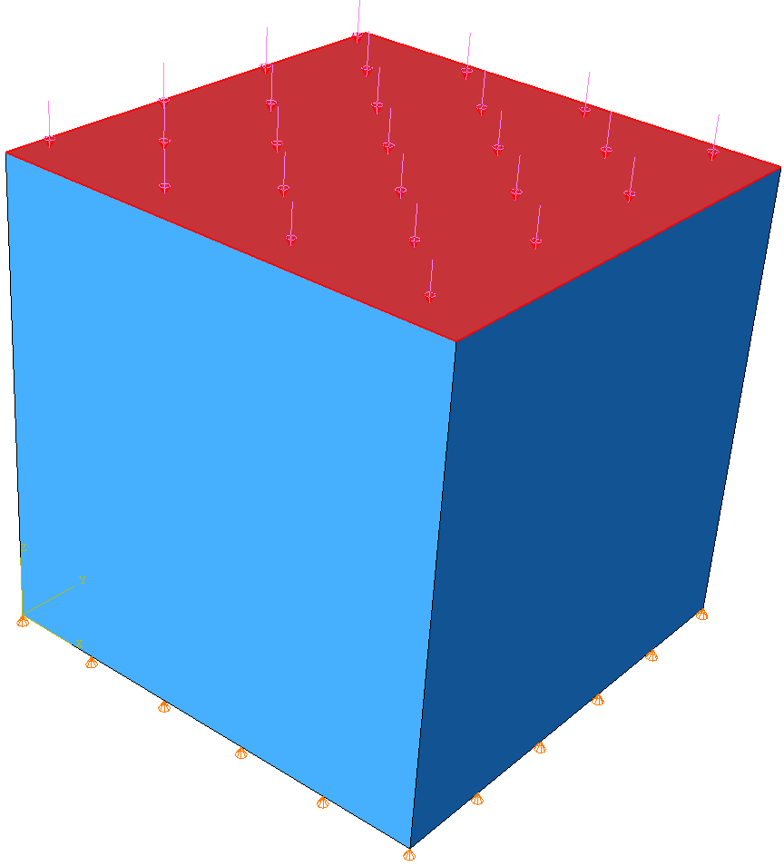
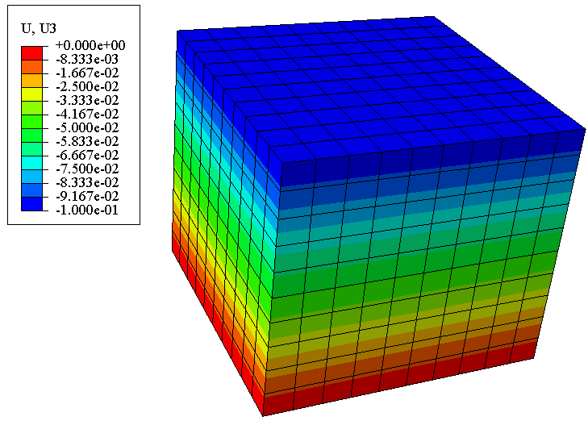
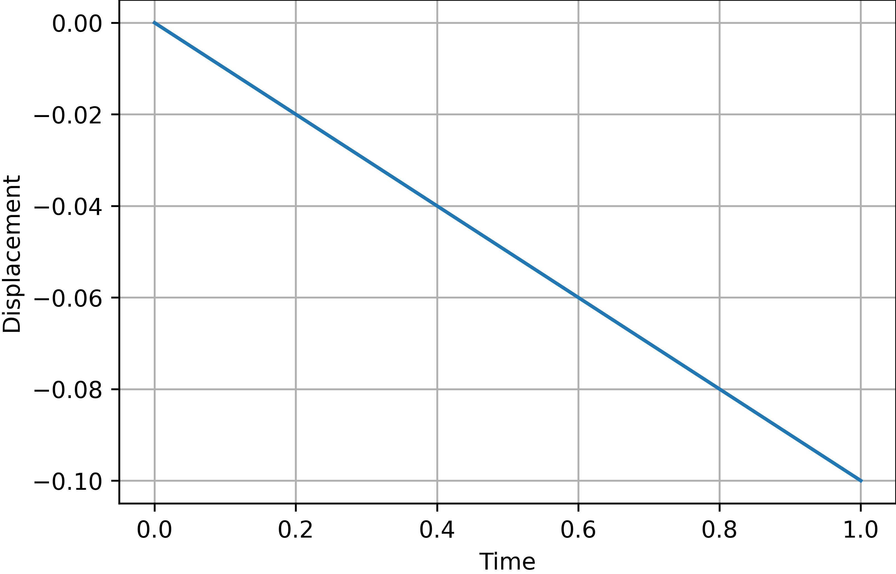

Tutorials#
Note
The abqpy is built in Python 3 but the Python interpreter of Abaqus is Python 2, so you must write codes that are compatiable with Python 2 and Python 3.
For more tests, check abqpy/tests at main · Haiiliin/abqpy.
- Usually in Abaqus, we have several things to do:
Build the model
Submit and monitor the job
Get the output data and visualize it
Build an Abaqus model#
The most convenient way to build an Abaqus model is to do it in Abaqus CAE. When we use the Abaqus/CAE graphical user interface (GUI) to create a model and to visualize the results, commands are issued internally by Abaqus/CAE after every operation. These commands reflect the geometry you created along with the options and settings you selected from each dialog box.
Therefore, we can build our Abaqus model using Python script. We can totally use the Python script to build our Abaqus model, although it is not an efficient way. Usually, we do something in Abaqus/CAE, and check the Python script in the reply file (.rpy). And then copy it to our script file, this works, but not nicely.
However, if type hints are provided in Python scripting of Abaqus, things will getting much easier, and that is what abqpy does.
The example model described in the following is simple, there is a squre structure, the vertical displacement of the bottom face is fixed, and there is a vertical pressure in the top surface, the Abaqus model is showed as follows:
{kind=link}

Header of the script#
Usually, when we use Python script to build the model, we need to import the following modules:
from abaqus import *
from abaqusConstants import *
from driverUtils import *
Module abaqus contains two most important variable mdb and session which control the model. Module abaqusConstants contains constant strings used in modelling, i.e., when we defines a part using the following code:
mdb.models['Model-1'].Part(name='part', dimensionality=THREE_D, type=DEFORMABLE_BODY)
THREE_D indicates the part is a 3D part, DEFORMABLE_BODY indicates the part is deformable.
Module driverUtils contains an important function executeOnCaeStartup, this function will be execute each time we open the Abaqus, so we need to call this function in our Python script. Now, the header of our Python script would be like:
from abaqus import *
from abaqusConstants import *
from driverUtils import *
executeOnCaeStartup()
Create parts#
First we need to create a sketch that will be used to create the part, we need to use ConstrainedSketch() to create a sketch:
model = mdb.models['Model-1']
sketch = model.ConstrainedSketch(name='sketch', sheetSize=1.0)
sketch.rectangle((0, 0), (1, 1))
In this code, we draw a sketch with a squre. Now we can create a part using this sketch:
part = model.Part(name='part', dimensionality=THREE_D, type=DEFORMABLE_BODY)
part.BaseSolidExtrude(sketch=sketch, depth=1)
The first line creates a 3D and deformable part. Then we use the BaseSolidExtrude() method to create a part using the sketch.
Create some sets for boundary conditions and loads#
Unlike building a model in Abaqus/CAE, we can just click the nodes/faces to create sets, when we use a Python script to build the model, we can use coordinates to find nodes/faces we need.
We can use Set() and Surface() to create sets and surfaces:
part.Set(name='set-all', cells=part.cells.findAt(coordinates=((0.5, 0.5, 0.5), )))
part.Set(name='set-bottom', faces=part.faces.findAt(coordinates=((0.5, 0.5, 0.0), )))
part.Set(name='set-top', faces=part.faces.findAt(coordinates=((0.5, 0.5, 1.0), )))
part.Surface(name='surface-top',
side1Faces=part.faces.findAt(coordinates=((0.5, 0.5, 1.0), )))
Merge parts to assembly#
We can use Instance() to create instances：
model.rootAssembly.DatumCsysByDefault(CARTESIAN)
model.rootAssembly.Instance(name='instance', part=part, dependent=ON)
Create materials and sections, and assign materials to sections#
First we create a Material object using Material():
material = model.Material(name='material')
Then we assign some properties to the Material object, i.e., Elastic() and Density():
material.Elastic(table=((1000, 0.2), ))
material.Density(table=((2500, ), ))
Then we create a HomogeneousSolidSection() and assign the material to the section (SectionAssignment()):
model.HomogeneousSolidSection(name='section', material='material', thickness=None)
part.SectionAssignment(region=part.sets['set-all'], sectionName='section')
Create steps#
It is easy to create a StaticStep():
step = model.StaticStep(name='Step-1', previous='Initial', description='',
timePeriod=1.0, timeIncrementationMethod=AUTOMATIC,
maxNumInc=100, initialInc=0.01, minInc=0.001, maxInc=0.1)
Specify output requests#
We can use the FieldOutputRequest() and HistoryOutputRequest() to specify field output and history output information.
field = model.FieldOutputRequest('F-Output-1', createStepName='Step-1',
variables=('S', 'E', 'U'))
Create boundary conditions#
We can use DisplacementBC() to create a displacement boundary condition:
bottom_instance = model.rootAssembly.instances['instance'].sets['set-bottom']
bc = model.DisplacementBC(name='BC-1', createStepName='Initial',
region=bottom_instance, u3=SET)
It should be noted that region of the boundary condition should be a region of the instances instead of parts, since sets created in parts are copied to the instance, we can use the sets in the parts that we defined before.
Create loads#
We can use Pressure() ro create a pressure:
top_instance = model.rootAssembly.instances['instance'].surfaces['surface-top']
pressure = model.Pressure('pressure', createStepName='Step-1', region=top_instance,
magnitude=100)
Mesh#
To mesh the model, we have to set the ElemType, which is defined in the mesh module, so we need to import mesh module:
import mesh
elem1 = mesh.ElemType(elemCode=C3D8R)
elem2 = mesh.ElemType(elemCode=C3D6)
elem3 = mesh.ElemType(elemCode=C3D4)
part.setElementType(regions=(part.cells, ), elemTypes=(elem1, elem2, elem3))
part.seedPart(size=0.1)
part.generateMesh()
Create jobs#
We can use Job() to create a job:
job = mdb.Job(name='Job-1', model='Model-1')
Then we can write the model to an input file (.inp):
job.writeInput()
Then we can submit the job:
job.submit()
job.waitForCompletion()
Save the Abaqus model to a .cae file#
We can use saveAs to save the Abaqus model to a .cae file:
mdb.saveAs('compression.cae')
It should be noted that we have to use this function to save the model when we use abqpy to build an Abaqus model. It is because that when we execute all the above codes, the Python script has not been sent to Abaqus kernel. All the functions mentioned above are included in abqpy, however, nothing has been done inside this functions, they are just provided for type hints. Therefore, if we want to send the Python script to the Abaqus kernel, we have to use the Abaqus command like this:
abaqus cae -noGUI script.py
In order to make it simple, this has been done in the saveAs() function:
def saveAs(self, pathName: str):
abaqus = 'abaqus'
if 'ABAQUS_BAT_PATH' in os.environ.keys():
abaqus = os.environ['ABAQUS_BAT_PATH']
os.system('{} cae -noGUI {}'.format(abaqus, os.path.abspath(sys.argv[0])))
The whole script#
The whole script of this example is showed as follows:
from abaqus import *
from abaqusConstants import *
from caeModules import *
from driverUtils import *
executeOnCaeStartup()
# Model
model = mdb.models['Model-1']
# Part
sketch = model.ConstrainedSketch(name='sketch', sheetSize=1.0)
sketch.rectangle((0, 0), (1, 1))
part = model.Part(name='part', dimensionality=THREE_D, type=DEFORMABLE_BODY)
part.BaseSolidExtrude(sketch=sketch, depth=1)
# Create sets
part.Set(name='set-all', cells=part.cells.findAt(coordinates=((0.5, 0.5, 0.5), )))
part.Set(name='set-bottom', faces=part.faces.findAt(coordinates=((0.5, 0.5, 0.0), )))
part.Set(name='set-top', faces=part.faces.findAt(coordinates=((0.5, 0.5, 1.0), )))
part.Surface(name='surface-top',
side1Faces=part.faces.findAt(coordinates=((0.5, 0.5, 1.0), )))
# Assembly
model.rootAssembly.DatumCsysByDefault(CARTESIAN)
model.rootAssembly.Instance(name='instance', part=part, dependent=ON)
# Material
material = model.Material(name='material')
material.Elastic(table=((1000, 0.2), ))
material.Density(table=((2500, ), ))
# Section
model.HomogeneousSolidSection(name='section', material='material', thickness=None)
part.SectionAssignment(region=part.sets['set-all'], sectionName='section')
# Step
step = model.StaticStep(name='Step-1', previous='Initial', description='',
timePeriod=1.0, timeIncrementationMethod=AUTOMATIC,
maxNumInc=100, initialInc=0.01, minInc=0.001, maxInc=0.1)
# Output request
field = model.FieldOutputRequest('F-Output-1', createStepName='Step-1',
variables=('S', 'E', 'U'))
# Boundary condition
bottom_instance = model.rootAssembly.instances['instance'].sets['set-bottom']
bc = model.DisplacementBC(name='BC-1', createStepName='Initial',
region=bottom_instance, u3=SET)
# Load
top_instance = model.rootAssembly.instances['instance'].surfaces['surface-top']
pressure = model.Pressure('pressure', createStepName='Step-1', region=top_instance,
magnitude=100)
# Mesh
elem1 = mesh.ElemType(elemCode=C3D8R)
elem2 = mesh.ElemType(elemCode=C3D6)
elem3 = mesh.ElemType(elemCode=C3D4)
part.setElementType(regions=(part.cells, ), elemTypes=(elem1, elem2, elem3))
part.seedPart(size=0.1)
part.generateMesh()
# Job
job = mdb.Job(name='Job-1', model='Model-1')
job.writeInput()
# Submit the job
# job.submit()
# job.waitForCompletion()
# Save abaqus model
mdb.saveAs('compression.cae')
Extract output data#
If we want to extract the output data, we have to write an outout script.
Header of the output script#
Similarly, we have to import some modules:
from abaqus import *
from abaqusConstants import *
from driverUtils import *
executeOnCaeStartup()
Open the output database#
We can use openOdb() to open the output database:
odb = session.openOdb('Job-1.odb')
Extract the data#
We can use the xyDataListFromField() to extract the output data:
dataList = session.xyDataListFromField(odb=odb, outputPosition=NODAL,
variable=(('U', NODAL, ((COMPONENT, 'U3'),)),),
nodeSets=('INSTANCE.SET-TOP', ))
dataList is a list of XYData objects. XYData is a data type defined in Abaqus, the data is stored in tuples of tuples, so we can simply save it to a file, i.e., using the numpy (numpy is installed in Python interpreter of Abaqus already):
import numpy as np
data = np.array(dataList[0])
np.savetxt('data.csv', data, header='time,U3', delimiter=',', comments='')
Results of above example#
The distribution of U3 of above model is showed as follows:
{kind=link}

The distribution of the vertical displacement of a point in the top surface is showed as follows:
{kind=link}

The whole output script#
The whole output script of this example is showed as follows:
from abaqus import *
from abaqusConstants import *
from driverUtils import *
import numpy as np
executeOnCaeStartup()
# Open output database
odb = session.openOdb('Job-1.odb')
# Extract output data
dataList = session.xyDataListFromField(odb=odb, outputPosition=NODAL,
variable=(('U', NODAL, ((COMPONENT, 'U3'),)),),
nodeSets=('INSTANCE.SET-TOP', ))
data = np.array(dataList[0])
np.savetxt('data.csv', data, header='time,U3', delimiter=',', comments='')